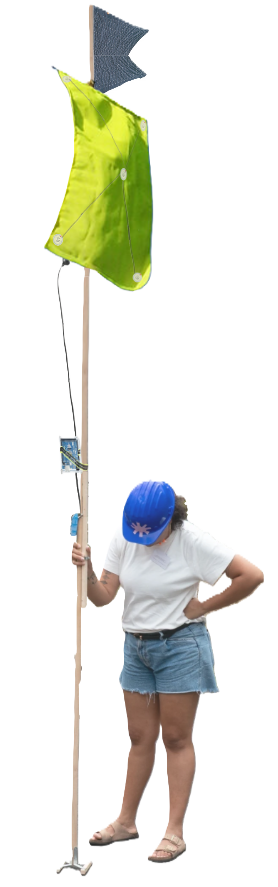
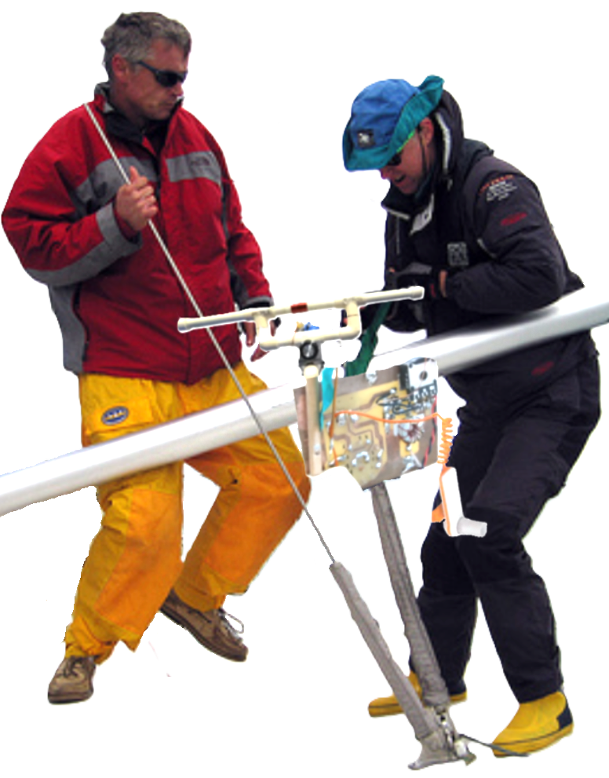
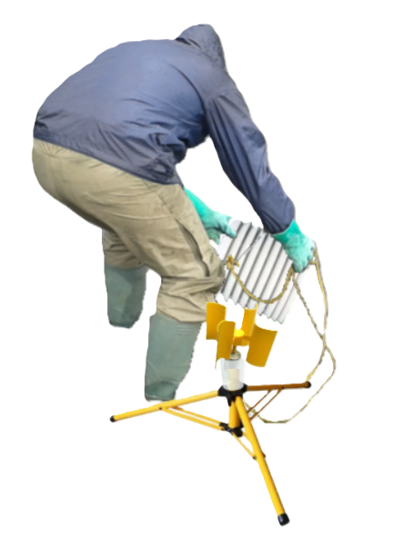
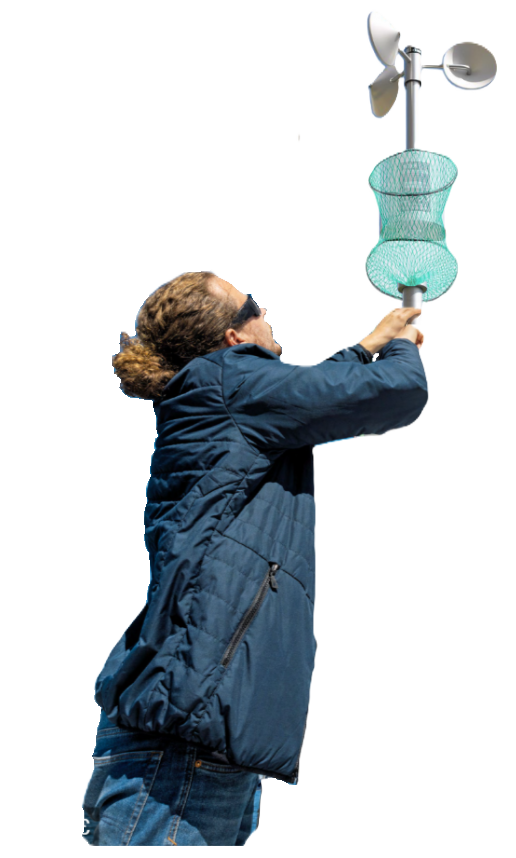
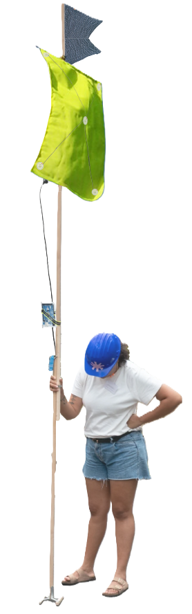
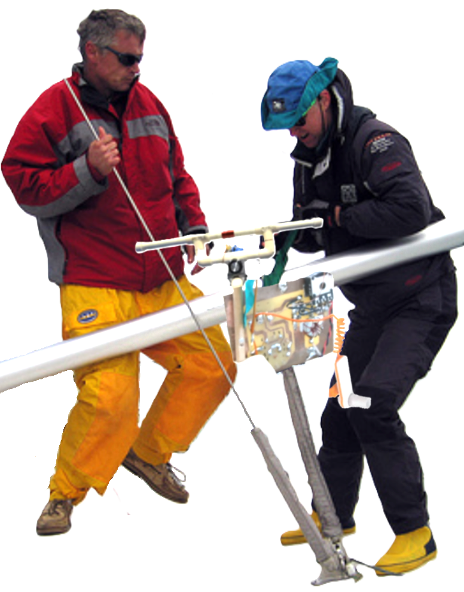
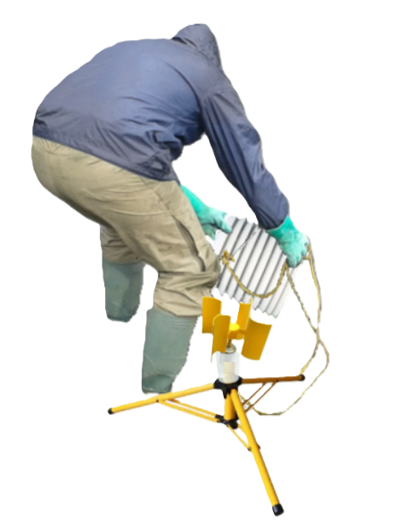
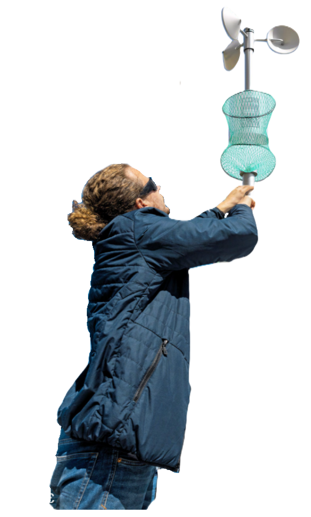

Extra Practice's Pool Tool kit


 









to increase inter-generational exchanges
salinity microphone
Estuaries are the only ecosystem where water lines can exchange. This sharing area creates an exceptional biomass, where shared thoughts and speech between salty water (freelancers, past students) and fresh chlorine water (students or just graduated students) can take place in a perfect equal foot and anti-hierarchical environment, whose result is a rich spawning ground.
To know if you have reached the right sharing area and spot, use the salinity microphone meter : if the exchange zone is ideal, the microphone will set : Time for live estuaries of consciousness !